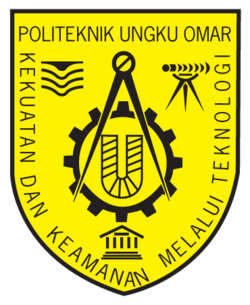
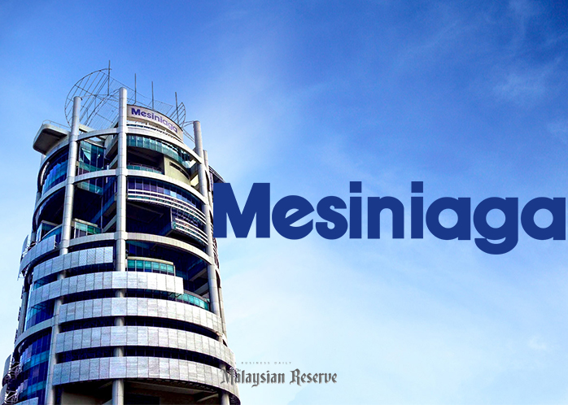
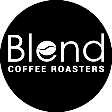

I'm a Bachelor of Computer Science (Artificial Intelligence) student at UTeM, with a Diploma in Electronic Computer from Politeknik Ungku Omar behind me. My work sits where intelligent algorithms meet real software: I design and train machine learning models, fuzzy inference systems, and rule-based expert systems, then build them into the web and desktop applications that put them to work. I care less about models that look good on paper and more about systems that hold up when a real user depends on them.
That product mindset comes from a background most CS students don't have. I built the brand website and e-commerce storefront for NERO°, an automotive care brand, and I've managed daily operations as a barista and outlet supervisor at Blend Coffee Roasters, supported users hands-on in IT, and represented my peers on the Student Representative Council. Each role taught me something a lecture can't — how to ship under pressure, lead a team, and stay close to the person on the other end of the product.
// System initialization sequence
[STATUS] Core AI Engine: Active
[STATUS] Local model offline execution: Ready (Ollama)
[STATUS] Edge node integrations: Calibrated
[MISSION] Translate intelligent algorithms into logical, user-centric interfaces.
Exploring localized AI development workflows. Focused on compiling, optimizing, and deploying custom large language models (LLMs) locally using Ollama, prioritizing data privacy and offline resource efficiency.
Exploring specialty roasters, sampling filter coffees, and analyzing unique menu items to spark discussions and network.
Trekking forest trails and waterfalls to appreciate natural creation, clean environments, and maintain physical fitness.
Playing badminton with family/peers and engaging in cooperative gaming (Valorant) during free time.
Bachelor of Computer Science (Artificial
Intelligence)
2024 — Present
Honored with the **Dean's List Award** (Anugerah Dekan) for academic excellence. Focusing on core AI foundations, including machine learning models, fuzzy logic, genetic algorithms, and rule-based expert systems, while actively representing the student body on the UTeM MPP.

Diploma in Electronic Computer
2021 — 2023
Prominent technical institute in Perak. Specialized in computer hardware, electronic circuits, microcontroller system troubleshooting, and embedded system diagnostics.
Computer Science & Accounts Stream
Graduated 2020
Built initial foundations in programming logic, algorithms, and financial accounting principles, while actively serving as Class Monitor and Quartermaster.
From student representation on the Student Representative Council (MPP/SRC) to managing daily operations and sensory classes as a barista supervisor.

Completed a comprehensive professional IT internship. Handled hardware diagnostics, software provisioning, and preventative maintenance for user endpoints and servers, while ensuring high-quality client relations.
Actively engaged in faculty integration programs, health advocacy, campus emergency medical response, and collaborative community awareness initiatives during my studies.
Elected student representative managing student body welfare and acting as university management liaison.
Elected student leader handling daily classroom operations and school-wide event logistics.

Supervised daily cafe floor operations, inventory logistics, and sensory training calibrations.
Finding balance beyond the screen by exploring tropical forest trails, chasing waterfalls, and appreciating environmental conservation.
I enjoy trekking through outdoor trails, connecting with the natural environment, and reflecting on the beauty of creation. It is my favorite way to recharge, gain new perspectives, and maintain a healthy, active lifestyle away from code.